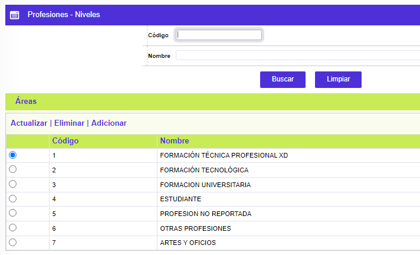
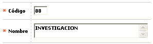
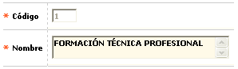
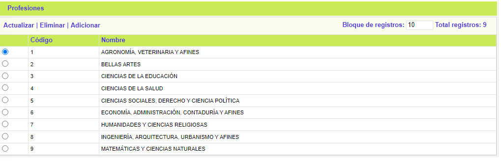
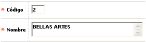
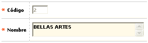
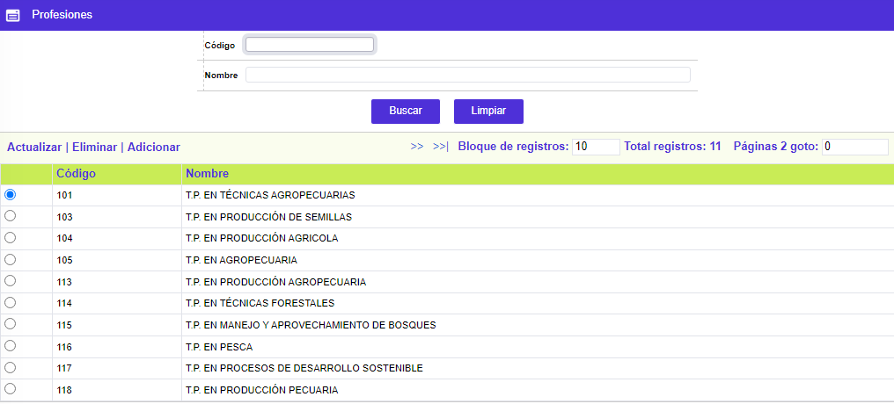
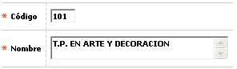
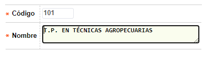

Profesiones
Mediante esta función se habilita la consulta y mantenimiento de la tabla en la cual se almacenan, a tres niveles, las diferentes profesiones desempeñadas tanto por los tarjetahabientes como por los funcionarios usuarios del Sistema, con base en la codificación establecida por el ICFES. La clasificación se hace en tres categorías, siendo el nivel la primera de ellas y presenta las carreras agrupadas en niveles de formación: Técnica profesional, Tecnológica, Universitaria u otros que la entidad considere. Le siguen en orden la categoría del área de conocimiento y finalmente la profesión. El formulario cuenta con una opción de Filtro de Búsqueda por Código y Nombre.

El formulario contiene los enlaces: Actualizar, Eliminar y Adicionar. Cuenta también con el hipervínculo Areas.
Adicionar: Al activar ese enlace se despliega un formulario.

Descripción de campos
|
Código |
Campo alfanumérico de dos dígitos, obligatorio, que contiene el código asignado a cada uno de los niveles definidos por la entidad. |
|
Descripción |
En este campo alfanumérico de 80 posiciones, obligatorio, se registra el nombre del nivel asociado a cada código. |
Actualizar: Al activar ese enlace se despliega un formulario en el cual el único campo modificable es Descripción.

Areas: Si el usuario invoca la opción Areas, se despliega un formulario con el mismo nombre y que corresponde a la segunda categoría de la clasificación. Permite indicar el área de conocimiento a la que pertenece cada carrera. El formulario cuenta con una opción de Filtro de Búsqueda por Código y Nombre.

El formulario contiene los enlaces: Actualizar,Eliminar y Adicionar. Cuenta también con el hipervínculo Profesiones.
Adicionar: Al activar ese enlace se despliega un formulario.

Descripción de campos
|
Código |
Campo alfanumérico de dos dígitos, obligatorio, que contiene el código asignado a cada área de conocimiento. |
|
Descripción |
En este campo alfanumérico de 80 posiciones, obligatorio, se registra el nombre del área de conocimiento asociado a cada código. |
Actualizar: Si el usuario selecciona un registro e invoca la opción Actualizar se despliega un formulario en el cual el único campo modificable es Descripción.

Profesiones: Si el usuario invoca la opción Profesiones, se despliega un nuevo formulario con el mismo nombre y que corresponde a la tercera categoría la clasificación. Permite indicar el nombre oficial de las diferentes carreras dentro de cada área del conocimiento y nivel. El formulario cuenta con una opción de Filtro de Búsqueda por Código y Nombre.

El formulario contiene los enlaces: Actualizar,Eliminar y Adicionar.
Adicionar: Al activar ese enlace se despliega un formulario.

Descripción de campos
|
Código |
Campo alfanumérico de tres dígitos, obligatorio, que contiene el código asignado a cada profesión. |
|
Descripción |
En este campo alfanumérico de 80 posiciones, obligatorio, se registra el nombre de la profesión asociada a cada código. |
Actualizar: Si el usuario selecciona un registro e invoca la opción Actualizar se despliega un formulario en el cual el único campo modificable es Descripción.
